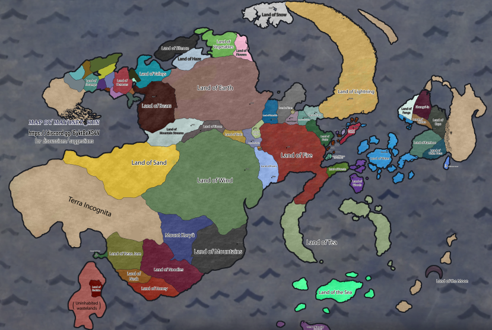
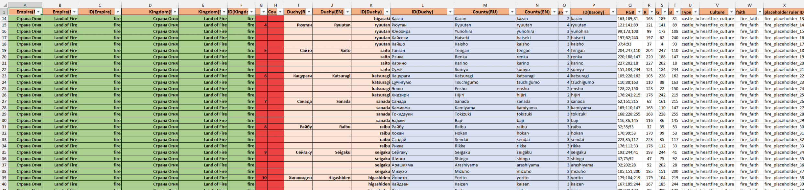
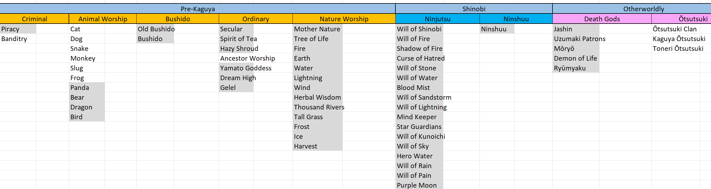
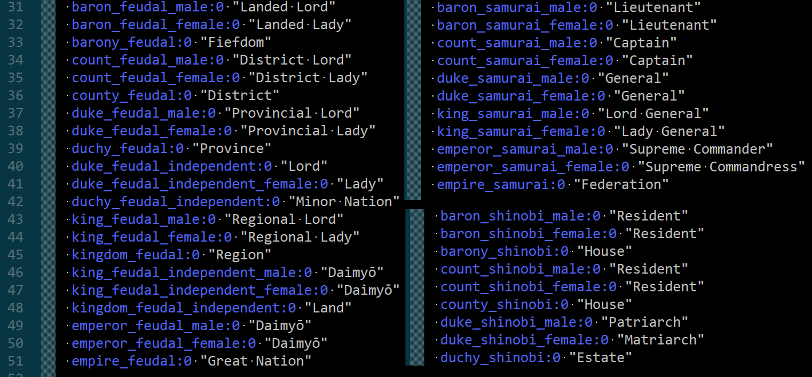

Welcome to the first DD. The trailer of this mod was shown at ModCon 2025, and most of the mentioned stuff you can see there.
Discord: https://discord.gg/6ykt8xXS4V
Trailer: https://www.youtube.com/watch?v=fUUCS7j_Dck
1) Let’s start with "Why?"
I wanted to make a mod with deep lore, "magic" and action. And this is exactly when I started rewatching Naruto. My inner voice said, "This is it!" To be honest, at first I was choosing between Dragon Age and Naruto, but there was already a team working on DA, honestly I would’ve chosen Naruto anyway. Still, I’m hyped about the Dragon Age mod! If you played the Warcraft CK3 mod, then you might have already seen some of my work there, like Arthas events, the Warcraft 3–style main menu, Theramore, Alliance/Horde mechanics, etc.
I had to read all the light novels and had to watch all of the Naruto anime, Boruto, fillers, movies, OVAs, and YouTube videogame playthroughs for filler plot, even played some of them. At the same time, I was documenting every character and idea that came to my mind.
2) "How?" and first steps
The first challenge was the map. For some reason, in 20+ years I was the first person who tried to make a canon map. And I did it! You can read about that here:
https://sumankun.github.io/NarutoDevDiaries/posts/diary-0/index.html
Don’t wanna repeat myself, so check it out if you love geography digging :)
If you’re lazy, this is how the potential map should look.

Luckily, I have enough experience in CK3 modding, so making the map itself in-game, writing code, keeping good performance, and doing compatches isn’t that disastrous.

You have to pre-design all possible [religions/faiths/heritages/cultures/new governments] and only then adapt the vanilla code.

3) Diffrences from vanilla
This is a quick overview:
- Shinobi lifestyles. In parallel to 1 vanilla lifestyle, you can keep 1 shinobi lifestyle, so you don’t lose vanilla events.
- Shinobi duels/stats. I made a shinobi duel system that can happen during a war, friendly duel training, chuunin exam or mission. It uses new shinobi stats (in addition to martial/diplomacy, etc), kekkei genkai, lifestyle perks, specific traits, etc. It’s a turn-based fight. You can see it in the trailer.
- Shinobi mission system. I haven’t started making it yet, but it’s 100% coming.
- Hidden village system. As you can see in the trailer, Hidden Leaf has ~130 counties/baronies. Hidden villages use a new holding type "house," and a new terrain type "urban". A house can sometimes not be on urban terrain.
- New 3D models. This already includes 3D models for Hidden Leaf buildings, chuunin and anbu clothes. New hairstyles are yet to come.
- Societies. An improved version of the CK2 societies mechanic for Anbu and other organizations. Afaik they dont plan societies any times soon, so i am safe?
- New governments. Pirate / Criminal / Shinobi / Criminal Shinobi / Samurai governments.

There’s probably a lot more, but it’s hard to remember. That’s it for the first introduction!
4) Mod release
Most likely the China DLC in December 2025. Considering how much I adapt from Asian DLC to Asian anime, it can be Jan–Feb 2026 (worst case!!). I’d bet January 2026 is the one.